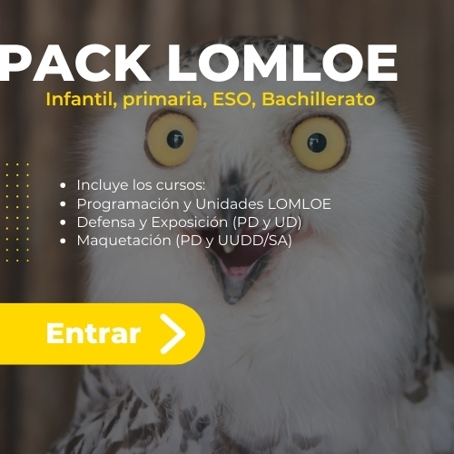

Competencia ciudadana (CC)
La Competencia Ciudadana es una de las 8 competencias clave de la LOMLOE que se focaliza en desarrollar las habilidades cívicas de los alumnos, alineado con los Objetivos de Desarrollo Sostenible planteados en la Agenda 2030. Vamos a ver qué es y cómo integrarla en nuestra programación didáctica.
¿Qué es la competencia ciudadana?
Esta competencia clave busca formar ciudadanos responsables con los valores democráticos, que tengan un compromiso activo con la sostenibilidad y tengan pensamiento crítico sobre los acontecimientos de nuestro tiempo.
De acuerdo a los currículos LOMLOE, la competencia ciudadana (CC) es:
La competencia ciudadana contribuye a que alumnos y alumnas puedan ejercer una ciudadanía responsable y participar plenamente en la vida social y cívica, basándose en la comprensión de los conceptos y las estructuras sociales, económicas, jurídicas y políticas, así como en el conocimiento de los acontecimientos mundiales y el compromiso activo con la sostenibilidad y el logro de una ciudadanía mundial. Incluye la alfabetización cívica, la adopción consciente de los valores propios de una cultura democrática fundada en el respeto a los derechos humanos, la reflexión crítica acerca de los grandes problemas éticos de nuestro tiempo y el desarrollo de un estilo de vida sostenible acorde con los Objetivos de Desarrollo Sostenible planteados en la Agenda 2030.
Real Decreto 157/2022, de 1 de marzo, por el que se establecen la ordenación y las enseñanzas mínimas de la Educación Primaria
Por tanto, esta competencia tiene varias aristas, que podemos trabajar en clase:
Alfabetización cívica
En primer lugar, se busca la alfabetización cívica, esto es el conocimiento de los derechos y deberes que tienen como ciudadanos de una sociedad democrática. Incluye el conocimiento de las instituciones y de los documentos legales de donde salen esos derechos y deberes, como la Constitución. Asimismo, es relevante tratar el derecho a voto y su importancia como método de participación en la vida política. En una época en la que gran parte de la población está desconectada de la vida política, es importante sembrar la mente crítica y la participación activa, para impedir el auge de gobiernos corruptos y totalitarios. Pero no sólo se trata de participar en la vida política, sino también en lo social: ¿podemos reducir la desigualdad?, ¿podemos hacer un taller para enseñar a usar dispositivos digitales a los mayores?, ¿o podemos ayudar a alumnos de menor edad a aprender algo que nosotros ya sabemos?, ¿y organizar una recogida de alimentos?, ¿somos conscientes de lo que consumimos, si es necesario y si lo hacemos en comercios locales?…. Hay muchos temas que podemos tratar en clase para fomentar el desarrollo de esta parte de la competencia cívica.
Ciudadanía mundial
Por otro lado, la CC debe desarrollar el conocimiento de los acontecimientos mundiales, no sólo fijarnos en España, Europa y Occidente. ¿Por qué sigue habiendo guerras en ciertas zonas del mundo?, ¿por qué en algunos países son frecuentes los tifones?, ¿por qué en China celebran el año nuevo de manera diferente a nosotros?, ¿por qué las fronteras son como son? Podemos tratar acontecimientos de la actualidad, pero también históricos; fíjate en qué juego puede dar esto en Historia, Literatura o Filosofía.
Una tercera arista, se trata de perseguir una ciudadanía global siendo conscientes de que nuestras acciones tienen consecuencias a nivel mundial, ya que formamos parte de una comunidad interconectada. El hecho de que nosotros compremos frecuentemente moda rápida supone la muerte de personas en los países de origen de esa ropa. Por tanto, es interesante tratar los Derechos Humanos y conocer las diferentes culturas (a nivel social), para tener esa idea global e interconectada del mundo.
Sostenibilidad
En última instancia, se centra en el compromiso con la sostenibilidad, con temas recurrentes en la escuela como cerrar los grifos cuando no lo usemos, pero podemos ir mucho más allá: los mares están llenos de plástico, las grandes ciudades emiten demasiada contaminación, los repartidores se mueven a diario entre ciudades y países para dejarnos productos en la puerta de casa, se construye en zonas protegidas y se queman terrenos por intereses económicos,… ¿Qué tal si fomentamos el consumo responsable y de proximidad? ¿Qué tal si compramos productos con menos embalaje? ¿Y si pensamos cómo desarrollar ciudades sostenibles?

Descriptores operativos de la Competencia Ciudadana
Como cualquier otra competencia clave, la competencia ciudadana tiene sus descriptores operativos, que puedes consultar en los currículos:
| Al completar la Educación Primaria, el alumno o la alumna… | Al completar la enseñanza básica, el alumno o la alumna… |
|---|---|
| CC1. Entiende los procesos históricos y sociales más relevantes relativos a su propia identidad y cultura, reflexiona sobre las normas de convivencia, y las aplica de manera constructiva, dialogante e inclusiva en cualquier contexto. | CC1. Analiza y comprende ideas relativas a la dimensión social y ciudadana de su propia identidad, así como a los hechos culturales, históricos y normativos que la determinan, demostrando respeto por las normas, empatía, equidad y espíritu constructivo en la interacción con los demás en cualquier contexto. |
| CC2. Participa en actividades comunitarias, en la toma de decisiones y en la resolución de los conflictos de forma dialogada y respetuosa con los procedimientos democráticos, los principios y valores de la Unión Europea y la Constitución española, los derechos humanos y de la infancia, el valor de la diversidad, y el logro de la igualdad de género, la cohesión social y los Objetivos de Desarrollo Sostenible. | CC2. Analiza y asume fundadamente los principios y valores que emanan del proceso de integración europea, la Constitución española y los derechos humanos y de la infancia, participando en actividades comunitarias, como la toma de decisiones o la resolución de conflictos, con actitud democrática, respeto por la diversidad, y compromiso con la igualdad de género, la cohesión social, el desarrollo sostenible y el logro de la ciudadanía mundial. |
| CC3. Reflexiona y dialoga sobre valores y problemas éticos de actualidad, comprendiendo la necesidad de respetar diferentes culturas y creencias, de cuidar el entorno, de rechazar prejuicios y estereotipos, y de oponerse a cualquier forma de discriminación o violencia. | CC3. Comprende y analiza problemas éticos fundamentales y de actualidad, considerando críticamente los valores propios y ajenos, y desarrollando juicios propios para afrontar la controversia moral con actitud dialogante, argumentativa, respetuosa y opuesta a cualquier tipo de discriminación o violencia. |
| CC4. Comprende las relaciones sistémicas entre las acciones humanas y el entorno, y se inicia en la adopción de estilos de vida sostenibles, para contribuir a la conservación de la biodiversidad desde una perspectiva tanto local como global. | CC4. Comprende las relaciones sistémicas de interdependencia, ecodependencia e interconexión entre actuaciones locales y globales, y adopta, de forma consciente y motivada, un estilo de vida sostenible y ecosocialmente responsable. |
Completa tu programación didáctica LOMLOE

Cómo trabajar la Competencia Ciudadana en clase
Una vez que conocemos qué es la competencia ciudadana, veamos cómo trabajarla en clase en diferentes niveles:
Infantil y Primaria
- Normas de convivencia: Empezamos hablando en clase sobre la importancia de respetar el turno de palabra, comunicar con amabilidad, cuidar los materiales y guardarlos en su sitio, etc. Cuando tenemos las ideas, pasamos a crear un mural que comuniquen claramente las normas. Con esa base, reforzamos la conducta diariamente según se sigan o no las normas.
- Resolución de conflictos: Podemos tener en clase o en el patio un banco donde sentar a los niños que tengan algún conflicto y mediar entre ellos para que se expresen, se escuchen, empaticen y lleguen a una solución pacífica.
- Trabajo colaborativo: Cualquier proyecto es una oportunidad para favorecen la cooperación entre los alumnos.
- Cuidado del entorno: Un huerto escolar, mantener limpio el patio o hacer visitas a entornos naturales nos ayuda a despertar la conciencia sobre el entorno y la importancia de mantenerlo cuidado.
ESO y Bachillerato
- Des-Informativo: Aprovechando los contextos comunicativos, podemos crear una situación en la que los alumnos se conviertan en periodistas y preparen un informativo. Tendrán que recabar información en diferentes medios y contrastar tanto información veraz como falsa. En grupos, prepararán un informativo con noticias falsas y veraces. El resto de alumnos serán grupos de verificación que tendrán que adivinar si la noticia es falsa o real. Para motivar a los alumnos, podemos asignar puntos a los grupos dependiendo de si aciertan y el tiempo que tardan en hacerlo.
- Feria gastronómica: En este caso, podemos aprovechar la diversidad cultural del centro y del entorno. Organizaremos un día, que puede ser de puertas abiertas, para poner puestos con comida de diferentes culturas. Para ello, los alumnos deben explicar recetas típicas de su comunidad y escuchar las recetas de otros. Asimismo, se informarán de recetas de otros lugares no representados por personas del centro. Es decir, si hay un compañero brasileño, nos dará sus recetas, pero podemos ir más allá e investigar la gastronomía de Ecuador, aunque no haya compañeros ecuatorianos. Cada grupo tendrá su puesto con comida de diferentes zonas (tanto países como ciudades o pueblos) y los alumnos se moverán por los puestos para aprender sobre otras gastronomías. También podemos convertirlo en un juego estableciendo objetivos, preguntas y puntos.